Annotation and 2D details
This chapter describes dimensions and constraints, text notes, tags, rooms and areas with their colour schemes, legend views, and the 2D drawing tools: detail lines, regions, detail components, repeating details, insulation and free 2D views. Annotations belong to the view they are made in: a dimension placed in a plan does not appear in another plan.
Before each click, every tool shows what it would make where the cursor is: the dimension with its value, the note's box, the tag on the element under the cursor, the region a room or area would fill, the line, region, component or insulation being drawn.
Dimensions
Annotations ▸ Dimension holds the dimension tools: Aligned, Linear, Angular, Radial, Diameter, Arc length, and the spot dimensions Spot Elevation, Spot Coordinate and Spot Slope. They work in plans, sections, elevations, free 2D views and legends. Pick the dimension type in the type selector while the tool is on; Type Parameters changes the type, and with it every dimension of that type.
Aligned and linear dimensions
With Aligned, the options bar offers which part of a wall is picked (Wall centerlines, Wall faces, Center of Core, Faces of Core) and what a click picks:
- References: click references one after the other (wall faces or centre lines, grids, door and window edges, detail lines, the edges of legend symbols), then click an empty spot to place the dimension line there. While you choose, the string follows the cursor. Press TAB over a wall to step through its references.
- Entire Walls: one click dimensions a whole wall. Options opens the automatic dimensioning options: Openings with their Centers or both Widths, Intersecting Walls and Intersecting Grids; openings by their widths and intersecting walls are ticked to begin with. Hover a wall: it lights up with every reference the click will add. Click it, click more walls to add them to the string, then click away to place the line. At each end the string reaches the wall joined there (its centre line or outer face, as the options bar's preference says). A curtain wall embedded in the wall counts as an opening. A grid that falls on a wall end or on another reference adds no witness line. It works the same in plans, sections and elevations.
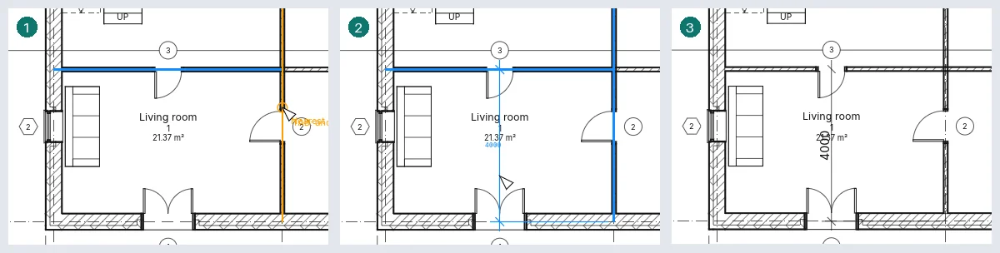
Linear measures along the horizontal or the vertical of the view, between points such as wall ends: where you place the line decides which, and the space bar switches between the two.
Angular measures the angle between two walls, grids or lines that meet; more lines through the same point make a string of angles, each with its value; the last click picks the sector.
Radial, diameter and arc length dimensions
Radial, Diameter and Arc length dimension a circle or an arc: a detail line's, or a curved wall's. Click it, then where the dimension goes. Over a curved wall, the options bar's Preference decides what comes first (its centre line, its faces, its core) and TAB steps to the others. A diameter dimension runs through the centre with an arrow on the curve at each end and Ø before the value; placed outside the curve, its line runs on to hold the value. On an arc shorter than half a circle it still spans the whole diameter. The dimensions follow the arc when its radius changes and go when it is deleted. In a section or an elevation only the arcs drawn there are offered.
A selected radial or diameter dimension has a grip at its end on the curve: drag it to turn the line round the centre; dropped on another arc or circle of the same centre, the dimension measures that one. Its value opens Dimension Text, and the grip under it moves the text, as for aligned dimensions. The values of angular and arc length dimensions open it and move in the same way.
An ordinate type has Ordinate Dimension Settings in its type parameters: Edit… opens a dialog with the Text Orientation (Aligned with the witness lines or Horizontal), the Text Location (In line with the witness line or Above the witness line), the Origin Visibility, the Origin Marker (Zero value, Circle or the type's Tick Mark) and the Dimension Line Style (Continuous or None, which leaves only the witness lines and ticks).
Changing a dimension
- Select a dimension and click its value: Dimension Text opens. Use Actual Value keeps the measure and adds text above, below, before or after it; Replace with text shows words instead (a number is refused).
- Drag the blue control under the text to move it away from the line; dragged back near the line, it snaps into place. Text moved far away gets a leader to its segment (see the type's Leader Type below); Leader on the options bar removes it.
- Selection: Dimensions ▸ Witness Lines ▸ Edit Witness Lines: click elements to add witness lines, click an existing witness line to remove it, then click an empty spot to finish. Each witness line of a selected dimension has a control in its middle: right-click it ▸ Move Witness Line, then click the new reference; or ▸ Delete Witness Lines. The control at the element's end of a witness line drags its gap from the element; near another witness line's gap it takes the same.
- Select an element the dimension measures and click a value next to it: type a new distance and press Enter, and the element moves: a wall, a grid, a door or window (along its wall) or a detail line.
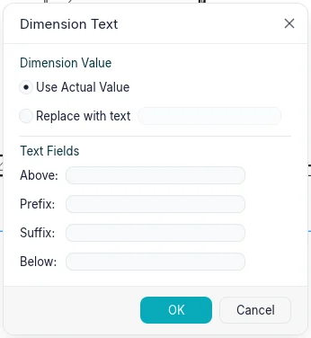
The type sets the tick (diagonal, filled arrow or dot), the extensions of the dimension and witness lines (Witness line control: a gap to the element, or Fixed to Dimension Line with its Witness Line Length), the Dimension Line Snap Distance (while placing or dragging, the line snaps at multiples of it from what it measures, and one step from a parallel string so that strings stack evenly; a dashed line and a tip show the snap; 0 turns it off), the Line Weight and Tick Mark Line Weight, the Centerline Symbol, Centerline Pattern and Centerline Tick Mark (Default is the type's tick) of witness lines to centre lines, the colour, the text size, offset, background, bold, italic and underline, the units (Units Format opens Format: Use project settings, or a unit with its rounding, which may be Custom with a Increment factor, its symbol and options), and for linear dimensions the Dimension String Type: Continuous, Baseline (stacked values from the first reference) or Ordinate (values from the first reference along one line). Show Opening Height writes the height of a door or window under the width measured jamb to jamb. Radial and diameter types have their centre mark (Center Marks, with its size) and their symbol: Radius Symbol Text (R) or Diameter Symbol Text (Ø), and where it goes, Before the value, After the value or Hidden (Radius Symbol Location, Diameter Symbol Location). The leader of moved text is set by Leader Type: Arc, or Line with its Shoulder Length and Text Location (Above: the shoulder runs under the text; In line: it ends at the text's side); Leader Tick Mark marks its end on the dimension line, and Show Leader When Text Moves draws it as soon as the text moves (Away from Origin) or only past the witness lines (Beyond Witness Lines). With arrows, a segment too short for them has them outside, and the line runs on past them by Flipped Dimension Line Extension. Annotations ▸ Dimension ▸ Dimension Types opens the type parameters of each family's current type, to set before dimensioning.
A selected baseline string shows a flip control at its origin: click it, or press the space bar, to measure from the other end. Baseline Offset in its properties sets the distance between its lines on paper.
Temporary dimensions
Select an element and temporary dimensions show its distances to the nearest references parallel to it: walls, grids, levels, reference planes, floor edges, room separation lines and detail lines. They show for every category in every view the element is drawn in: plans, sections, elevations and 3D views, where they lie on the element's level. A selected level shows its distances to the levels above and below it, in a section or an elevation.
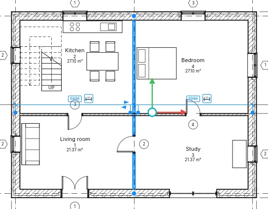
Click a value, type a new one and press Enter to move the element: a length takes a unit of its
own (2.5 m), and a formula starts with = (=8000/2). Click the dimension symbol beside it to
make it permanent.
Each witness line has a blue control. Drag the one on the reference onto any other reference to measure from there; or right-click it ▸ Move Witness Line, then click the new reference. A click on a control steps through the references of the same object: a wall's centerline, its faces, its core faces and its core centerline. The element remembers the references chosen, for each view, and they follow when the reference moves; right-click ▸ Reset References goes back to the nearest ones.
With several elements selected none are shown, and the options bar offers Activate Dimensions to show them for all the selected elements.
While a component, a door or a window is placed, temporary dimensions show its distances to the nearest references; Tab steps to the next ones. Rest the pointer for a moment: the element waits while the pointer goes to one of its values, and a click on the value types the distance it goes at. While drawing, the length and the angle are shown; Rotate shows the angle as an angular dimension, and an angle typed turns the selection.
Project ▸ Additional settings ▸ Temporary Dimensions sets where walls measure from (Centerline, Faces, Center of Core, Core Faces) and doors and windows (Centerline or Openings), for the whole project. The same dialog sets the text of every temporary dimension, for the application: from 8 to 20 pt (8 at first), on a transparent or an opaque background. Beside the settings a preview shows three walls measured as chosen; the Preview switch in the dialog's header hides it, the dialog keeping its size, and the choice is kept.
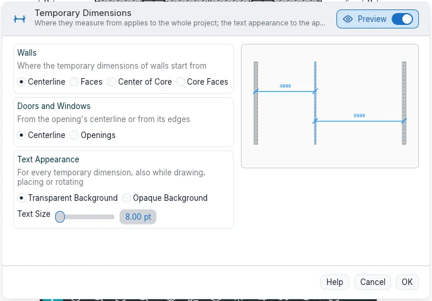
Constraints
Select a dimension: a padlock is shown on each segment. Click it to lock the segment: the distance then holds when either element moves, and a move that would break it is refused. Click it again, or right-click it ▸ Toggle Lock, to unlock; right-click ▸ Show Related selects the two elements the lock ties. A string of two segments or more shows EQ: click it and the references become equally spaced, and stay so when one of them moves. Equality display in the properties shows the values instead of EQ.
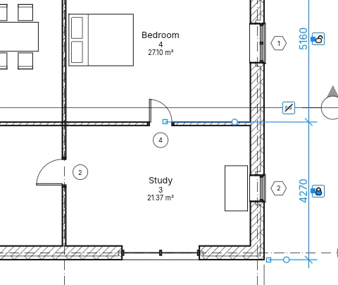
Selecting an element a constraint holds shows the constraint as blue dashed lines, unless the category Constraints is hidden in Visibility and Graphics. Deleting a dimension that holds a constraint asks what to do: OK deletes the dimension and keeps the constraint; Delete Elements deletes both. Modify ▸ Align with its padlock closed is a constraint too.
Spot dimensions
- Spot Elevation: in a plan, click a floor, a roof or the level; in a section, any point. The value is in metres with its sign.
- Spot Coordinate: the north and east coordinates of a point in a plan.
- Spot Slope: the slope of a roof pitch in a plan, or of a sloped line in a section, with an arrow pointing down.
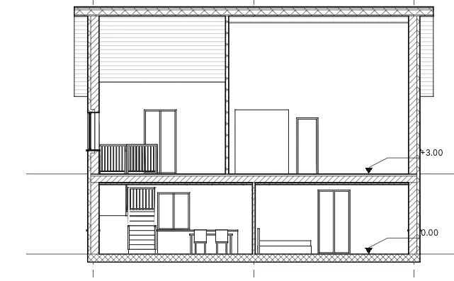
The options bar offers Leader and, with a leader, Shoulder: with no leader one click places the spot; with a leader, click the point and then the text; with a shoulder, the point, the bend and the text. While you hover, the value shows at the cursor. For spot elevations it also offers Relative Base: (for a type whose Elevation Origin is Relative) and, in plans, Display Elevations:: the actual elevation, the top, the bottom, or both. For spot slopes, Slope Representation: draws an Arrow or, in sections, a Triangle.
A selected spot has grips at its point, its shoulder and its text: drag the point and the spot measures what is there. A spot on a floor or a roof is deleted with it. While placing a spot, Esc lets go of the one half placed; a second Esc ends the tool.
The spot type sets Elevation Indicator, Top Indicator and Bottom Indicator (the top or bottom indicator, then the elevation's, then the value; each one's … as Prefix/Suffix puts it after the value instead), the Symbol, Include Elevation and the North/South Indicator and East/West Indicator of coordinates (with Indicator as Prefix/Suffix), and the Leader Line Length and Slope Direction (Down or Up) of slopes.
A spot elevation's Properties also give Single/Upper Value Prefix and Single/Upper Value Suffix, and, for the bottom value, Lower Value Prefix and Lower Value Suffix: words written before and after the value.
Arrows, fonts and alternate units
Project ▸ Additional settings ▸ Arrows opens Type Parameters of the project's arrow types. Each has an Arrow Style (Arrow, Diagonal, Dot, Heavy end tick, Elevation mark), Filled, Opening angle, Mark size on paper and, for the heavy tick, its own pen; what the style does not use is greyed. Duplicate… and Rename… work as for other types; the preview shows a note's leader and a dimension drawn with the arrow. Every leader arrow (text, tags, symbols, spot dimensions) and every tick of a dimension type lists None and these types, so changing a type changes every drawing that uses it. Copy Settings from Project copies them, Purge unused removes the ones nothing uses.
In a dimension type, Text Font, Width Factor and Reading convention (Aligned with the line, or Horizontal: always level, also on vertical dimensions) shape the value; Alternate units shows a second value To the right or Below, with its own Format…, prefix and suffix. On the desktop Text Font also lists the fonts of the computer; a project opened on a computer without that font draws it with BIMopen Sans and says so when it opens. In the web version only our two fonts are offered. A spot elevation type also chooses its Symbol (None, Triangle, Filled triangle, Crosshair) and its Leader Arrowhead with the weights of the leader and the arrow.
Text
Annotations ▸ Text ▸ Text (TX): click where the note goes and type; Enter starts a new line.
A click gives a note that does not wrap; dragging gives it a width, and the words wrap in it.
Clicking elsewhere finishes the note, and Esc ends the tool. Tab while typing indents the
paragraph. The text size is on paper: the note keeps its printed size at any view
scale.
The Format panel sets, before placing or on a selected note:
- the leader: No Leader, One Segment (click the tip, then the note), Two Segments (tip, elbow, note) or Curved;
- the alignment, left, centre or right, and Bold, Italic and Underline (Ctrl+B, Ctrl+I, Ctrl+U on the selected characters while typing, or on the whole selected note);
- on a selected note, Add Left Straight Leader and the other three leader buttons, and Remove Last Leader;
- Left Attachment and Right Attachment (Top, Middle, Bottom): where the leaders meet the note; chosen while placing, they stay for the next notes.
- Paragraph Format: the paragraphs as a list, with Bullets, Numbers, Lowercase letters or Uppercase letters; the text of each item starts at the first tab stop, and wrapped lines are indented by one.
Near the line of another note's corner, a new note snaps to it, and a dashed line shows it.
On a selected note, drag the cross to move the box (the leader tips stay), the round side controls to change its width, and the rotation control to turn it. A grip in the middle of each leader makes an elbow when dragged, or bends a curved leader. Double-click inside it to edit the words. Its properties include Arc Leaders, Left Attachment and Right Attachment, and Keep Readable, which never shows it upside down. The text type sets the colour (of text, border and leaders), the background (Opaque masks what is behind), Show Border with its offset, the leader arrowhead, the Line Weight of the border and leaders, the size, the Tab Size (12.7 mm), bold, italic and underline. The small Text Types button of the Text panel opens Type Parameters, where Duplicate… makes a new text type.
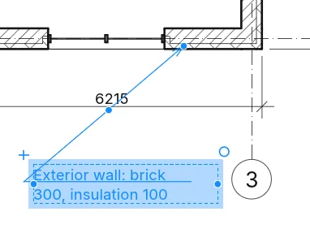
Annotations ▸ Text ▸ Find/Replace finds words in the notes of the current selection, the current view or the whole project (Scope:), with options for case and whole words. Find All lists the matches with the view they are in; Find Next, or a click on a row, selects that note and shows its whole text under Context. Replace changes the match highlighted (the first when none is), Replace All every one, and Close closes the dialog. On selected notes it is also under Tools of their tab.
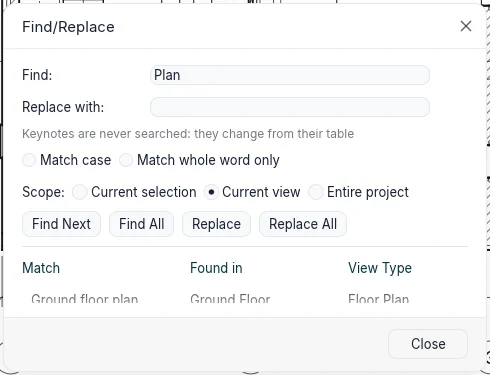
Inside a group, Find All shows one row per group type, with a lock and the number of copies; those notes change from Edit group, where the scope becomes Group being edited and Finish carries the change to every copy.
Annotations ▸ Text ▸ Spell checker (F7) checks the selected text notes, otherwise those of the
view or sheet (with the views placed on it); tags, dimensions, parameters and schedules stay out,
and in 3D the command is grey. For each word not in the dictionary the dialog shows the note with
the word highlighted, Change to and up to six Suggestions: Ignore, Ignore all (until
the project closes), Add to dictionary (the Personal dictionary), Change and Change
all (also in the notes still to check); a repeated word goes with Delete. The whole check is
one undo step. Notes in groups are skipped and the final message lists the groups; in Edit
group only the group's notes are checked. Options ▸ Spelling holds the five boxes (words in
capitals, with numbers, in mixed case, web addresses and paths, repeated words), Restore
defaults, the Main dictionary (Italian is built in, the other languages come with the
language packs) and the Personal dictionary, a text file with one word per line, with
Edit….
The text type's Text Font is BIMopen Sans or the fixed-width BIMopen Mono, and its Width Factor draws the letters narrower (below 1) or wider, on screen, in prints and in exports.
Text format and leaders
While you type, Bold, Italic and Underline (or Ctrl+B, Ctrl+I, Ctrl+U) apply to the selected characters; with nothing selected they apply to what you type next. With the note selected but not being typed, they apply to the whole note. When the selection is partly formatted, the button shows it with a dashed border.
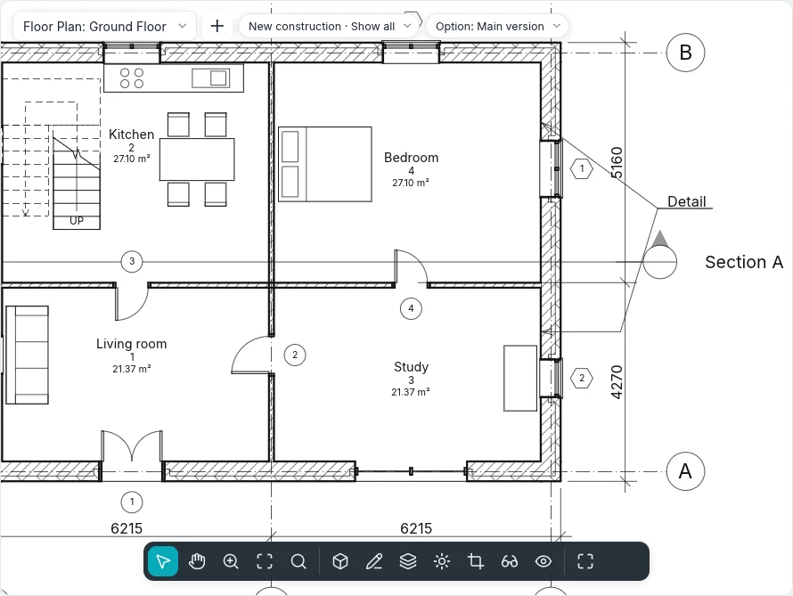
Paragraph format applies to the paragraphs the selection touches (or the one with the cursor), and numbering starts again after a paragraph without a list. Tab indents the paragraph's text by one tab stop (the marker stays), Shift+Tab removes the indent. Pasted text takes the paragraph's format. While you type, Paste, Cut and Copy in the Clipboard group work on the text, at the cursor.
With a leader, near another note the leader's end snaps to its six attachment points (left and right, top, middle and bottom), with the mark and the hint Note attachment; Tab moves to the next point. Without a leader the note lines up with the origins of the other notes (left, centre or right by alignment) and with the texts of tags. With Top or Bottom attachment the leader goes on under the first or last line; with Middle, or with Show border, it stops at the border.
Clicking away, the note just typed stays selected with its controls and the tool stays on: the first Esc clears the selection, the second ends the tool. Superscript and Subscript shrink and raise or lower the chosen characters; All caps shows them in capitals without changing the text typed.
Symbols
Annotations ▸ Symbol ▸ Symbol (SY) places a 2D annotation symbol in a plan, a section, a
free 2D view or a legend: a North Arrow, a Centerline Symbol, a Flow Arrow, a
Target or a Revision Delta, the last two with a text of their own. The symbol follows the
cursor before the click; the space bar turns it a quarter, or Rotation on the options bar
sets its angle. With Number of leaders: above zero, the click places the symbol and the next
clicks put the ends of its leaders. The type sets the symbol's size on paper and its leaders'
arrowhead; Duplicate… in Type Parameters makes a new one.
Tags
Annotations ▸ Tag ▸ Tag by Category (TG): hover an element (a door, window, wall, room or area)
and click to tag it. The options bar sets Horizontal or Vertical, the Leader and its
length; the space bar switches the orientation, while placing or on a selected tag. Door and
window tools have Tag on Placement, so each new door or window comes with its tag.
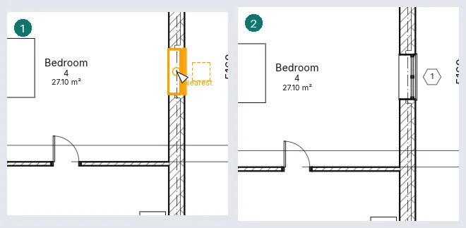
Tag All opens Tag All Not Tagged: tick the categories, the tag type of each, the leader and the orientation, for all the elements of the view or only the selected ones; only elements with no tag get one.
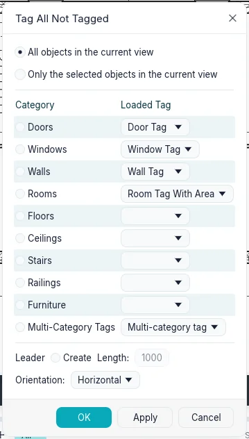
With a leader, Attached End ends it on the element; Free End ends it where you clicked, and a selected tag shows a grip to drag that end anywhere (Leader End in the properties switches between the two). A tag lines up with the other tags of its kind while you place it or drag it: near the line of another tag's centre it snaps to it, and a dashed line shows it. Tags hidden in the view (Visibility and Graphics) are turned on when you tag, and the message says so.
Double-click a tag to edit what it shows: a door's mark or a wall's type mark in place; a room's or area's number and name together in Edit Label Values. A tag takes another type of its own category from the type selector, and Pick New Host (Host panel) moves it to another element of the same category. Room label types choose whether they show the number, the area and the volume. A room or area label set to Pattern keeps an angle: it turns with Rotate, and the space bar lines it up with each wall near it in turn (Rotation in its properties). Deleting a room's label leaves the room, and the message says so.
Loaded tags and numbering
Annotate ▸ Tag ▸ Loaded Tags (in the BIMopen style the command of the same name; in the options bar of Door and Window the Loaded Tags… button) lists every taggable category with its default tag. A filter narrows the list; in the tag column you pick a type of the category or, for model categories, a multi-category tag; Edit Type… opens the type of the picked row. Load… stays greyed for now. The choice is saved in the project and applies to Tag, Tag All and Tag on Placement, which is on from the start for doors and windows.
Every model category has its own tag (floors, ceilings, roofs, columns, stairs, ramps, railings, panels and mullions, furniture, plumbing, generic models), showing the Type Mark. The tag just placed stays selected until the next one is placed or ESC is pressed, and the tool stays on.
Doors, windows, rooms and the other elements are numbered from the last mark typed: its last number goes up keeping its zeros (P-09 → P-10), or its last letter (1A → 1B, Z → AA); a value already used is skipped.
A selected tag shows its controls: the cross above its text, dragged, moves the text and the leader follows; the elbow halfway along the leader bends it (double click: straight again); the attached end slides along the element. The options bar of the selected tag has Orientation, Leader and Attached/Free End; a click on the text of the tag already selected types its value. Detail components and revision clouds have their tags too (the cloud shows the revision's number).
Tag All tags only what the view shows (it skips hidden elements, categories turned off, elements a filter hides or outside the crop, and says how many); with a selection it starts from Only selected objects and each row says how many it has; when tags are hidden in the view, it asks first whether to show them. In Object Styles and Visibility/Graphics, under Tags, each kind of tag (doors, windows, walls, rooms, furniture, multi-category, material…) has its row with weight, colour and pattern.
Multi-category tags
Annotations ▸ Tag ▸ Multi-category tag tags any model element: walls, doors, windows, floors, ceilings, roofs, columns, stairs, railings, furniture, plumbing, curtain panels and generic models (rooms and areas keep their own tags). It has the options of Tag and the same properties once placed; the space bar turns it. What it shows is set in the type (Type Parameters): Label, Edit… opens Edit Label, the fields one per line, each with a prefix and a suffix, chosen among Category, Type Name, Mark, Type Mark, Comments, Description, Host Count and the project's and shared parameters. A value that is empty, or a parameter the element does not have, reads ?.
With a Filter Parameter (a shared parameter) in the type, only the elements that have that parameter light up and can be tagged. Double-click a line of a selected tag to type its value: a parameter of the element changes at once; a parameter of its type asks first, since every element of the type changes. Tag All lists the multi-category tags too: ticked, every element of the view that has the filter parameter and no tag of that type gets one. In a section or elevation the tag goes where you click, its leader to the point of the element. It follows the element: when the element moves or changes, the tag and its leader's end move with it, as in plan; the space bar turns it and a double click types its value there too. Material tags follow their element the same way, in plans and sections.
Material tags
Annotations ▸ Tag ▸ Material tags the one material under the cursor, in a plan, section or elevation at Medium or Fine detail: a layer of a wall, floor, roof or ceiling, cut or seen, or the material of a door, window, component or column. At Coarse detail the layers are not drawn, so they do not light up and the status bar says so. The tag shows the material's Description; when it is empty it reads ?: double-click it and type, and the material's description is filled (every tag of that material shows it). Drag the grip at the end of the leader onto another layer and the tag reads that material; the space bar turns it. If the element later loses that material (its type changes), the tag reads ? and the change warns. The type's Label chooses what it shows: Description, Name, Comments, Mark, Material class, Keywords, Manufacturer, Model, Cost, URL, Keynote or Host Count.
Tags with several leaders
Turn on Add/Remove Host on the options bar of Tag, Multi-category tag or Material, click the elements one after the other (a second click takes one out again), then click an empty place: one tag goes there, with a leader to each element (Enter puts it by the first). A category tag takes elements of its own category, a material tag places of the same material. On a selected tag, Host ▸ Add/Remove Host adds or removes leaders until End; Leaders ▸ Merge Leaders joins them at one elbow before the tag, and Select Leaders to Show hides or shows the leader of each host clicked. Host Count in the properties tells how many elements the tag points at. Deleting an element takes its leader away; the tag stays while it points at something.
Several values
When the hosts of a tag differ (two doors with different marks, a field of a multi-category tag), that line reads ‹varies›; a line they share reads its value, and Host Count never varies. Double-click it: the field opens empty, or with the shared value, and what you type goes to every host in one step (a parameter of their types asks first). A room or area tag with several rooms opens Edit Label Values with what they share; only what you type is written. Project ▸ Additional settings ▸ Multiple Values Indication chooses what such lines show: ‹varies›, or Show custom text with a text of your own. The Properties palette of several selected elements shows the same text where their values differ.
Keynotes
Annotations ▸ Tag ▸ Coded note has four entries (the BIMopen style shows them as tiles):
- Element note: click the element (a wall, door, component, detail component… whose type has Keynote), then the leader's bend, then where the note goes. It reads the type's Keynote; a type without one opens Keynotes.
- Material note works as Material: click a material (a layer at Medium or Fine detail) and the note reads its Keynote; its leader always ends on the material.
- Free note: the same three clicks; Keynotes always opens and the value stays in the note, the element does not change.
- Coded note options: see below.
Each kind has four types: Number, Number in large box, Number in small box and Text (the note's text from the table). The options bar has the orientation, Leader and Attached end or Free end (a material note's end is always free).
Keynotes shows the table as a tree: Key Value and Keynote Text, each row under its parent value; + and − open and close the branches, Search finds words in values and texts. OK gives the row picked, Cancel leaves the box empty. Edit table… edits the project's table (value, text, parent value). Select a note and click its value, or its empty box, to pick another: an element note writes its type's keynote after asking (every element of the type changes), a free note only itself, a material note its material. … by Keynote in Type Parameters and in a material's Identity opens the same tree.
Coded note options chooses where the table comes from: Table in the project (edited here) or Linked file, a text file with one row per line — value, TAB, text, TAB, parent value (a spreadsheet saved as tab-separated text works). Full path shows where the file is, Saved path how it is written, with Browse…; Path type is Absolute, Relative (to the project's folder) or In the library. View… shows the table read only. Sample table links the table we ship: short, in Italian, with building works, insulation, windows and doors and a section of user notes. Reload reads it now, and the dialog warns when the file changed since it was read. The file is read again every time the project opens; the project keeps a copy, used when the file is missing (it says so), and values no longer in the file are listed. Numbering method: By keynote shows the value; By sheet numbers the notes 1, 2, 3… on each sheet in the order they were made, and a view not on a sheet shows an empty box.
View ▸ Legends ▸ Coded note legend makes a schedule, Keynote Legend, with Keynote Value and Keynote Text, one row per value, with the usual schedule tabs (a filter such as «begins with» on the value, sorting, formatting, appearance). Filter by sheet (in Filter) lists on each sheet only the notes of its views; numbered by sheet it shows the same numbers. Find/Replace never changes keynotes: they change from the table.
Rooms
Home ▸ Rooms and Areas ▸ Room (RM), then click inside a region enclosed by walls or room
separators: the room fills it, around free-standing walls too. In the options bar:
- Upper Limit and Offset: the room reaches that level plus the offset (4000 mm by default); a higher level gives a room over several storeys, such as an atrium;
- Tag on Placement, on by default, with the tag's orientation and leader;
- Room: New, or a room that is not placed, to put it back;
- Highlight Boundaries: walls and separators that bound rooms turn orange, and the warning lists them.
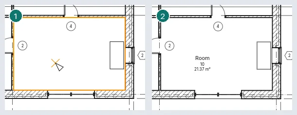
A room placed in open space is kept with a warning, and takes its shape once the space is closed; a second room in a region already taken is marked Redundant Room and not counted twice. A number another room already has, a room lower than the computation height (1200 mm) and a base above it are warned about too, and so is a room separator drawn over another.
Walls bound the rooms of a level when they stand at its computation height: 1200 mm while Automatic Room Computation Height is ticked in the level's properties, otherwise its Computation Height.
A section shows the rooms it cuts when they are selected or under the cursor (TAB reaches a room behind other elements). A room selected there has an arrow at its top and one at its base: drag them to change its Limit Offset and Offset at Base.
Room Separator draws lines that split a space into rooms without walls. A wall bounds rooms while its Room Bounding property is on. Floors and roofs above cap the room's volume.
Deleting a room removes it from the plan but keeps it in the project, Not Placed, with its data; its tags go with it. Deleting a room label leaves the room. A room label dragged out of its room asks whether to Move to Room.
Rooms show through their tags. In Visibility and Graphics, Rooms has Interior Fill and Datum (the cross lines). Area and Volume Computations opens on Computations: the room boundary at the wall finish, centre, core layer or core centre, and Areas and Volumes to compute volumes too (by default only areas; the volume is always measured to the wall finish). Its second tab is Area Schemes.
Areas
Areas belong to an area scheme: Gross Building (which cannot be deleted) and Rentable come with every project, and Area Schemes ▸ New adds more.
- Rooms and Areas ▸ Area ▸ Area Plan: pick the scheme and the levels. Answer Yes to draw area outlines along the exterior walls, No to draw them yourself.
- Area ▸ Area Outline: draw the outlines, or pick walls; with the area rules on, an exterior wall of a gross plan gives its outer face.
- Area ▸ Area: click inside the outlines. The area is tagged when placed; Tag ▸ Area Label tags it later. Placed where no outlines close a region, the area is kept with a warning and takes its shape once they do; a second area in a region is Redundant Area.
Deleting an area leaves it in the project, not placed, without its tags; Area: in the options bar of the Area tool lists the areas not placed, to put one back with a click.
Colour schemes
A colour scheme fills the rooms or areas of a plan (and the rooms a section cuts) by a value (name, number, department, area type) or by ranges of area. Set it in the plan's Color Scheme property; (none) turns it off. Color Schemes (Edit Color Scheme) creates and duplicates schemes and edits the title, the parameter, the values with their colour and visibility, their order and the ranges. Apply keeps the changes and sets the scheme of the view with the dialog open. Color scheme location, a view property, draws the fills in the Background (under the model) or in the Foreground (over the model, under the annotations).
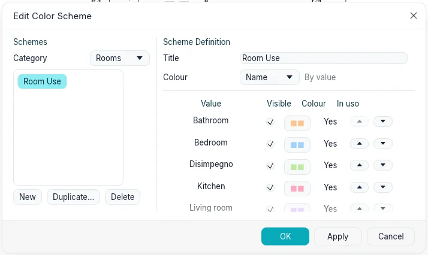
Rooms and Areas ▸ Legend places the legend of the plan's scheme: a swatch and a label for each value. Its Values displayed are By view (those in the plan) or All, and Columns flows the swatches into several columns. A plan can have several legends; deleting one leaves the scheme.
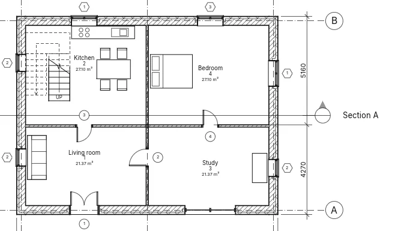
Legend views
Views ▸ Legends ▸ Legend opens New Legend View: a name and a scale. The legend opens and is listed under Legends in the Project Index. Annotations ▸ Component ▸ Legend Component places the symbol of a type: in the options bar, the type, the View it is seen from (a wall in plan or section; a floor or roof in section or plan; a door, window or component in plan, front or back) and the Host Length, the piece of wall a door or window sits in. Legend components draw at the legend's detail, can be moved and dimensioned (the edges of doors, windows and components; walls, floors and roofs are not), and are not counted by schedules. Text, detail lines and regions work as in a free 2D view. A legend can be placed on several sheets.
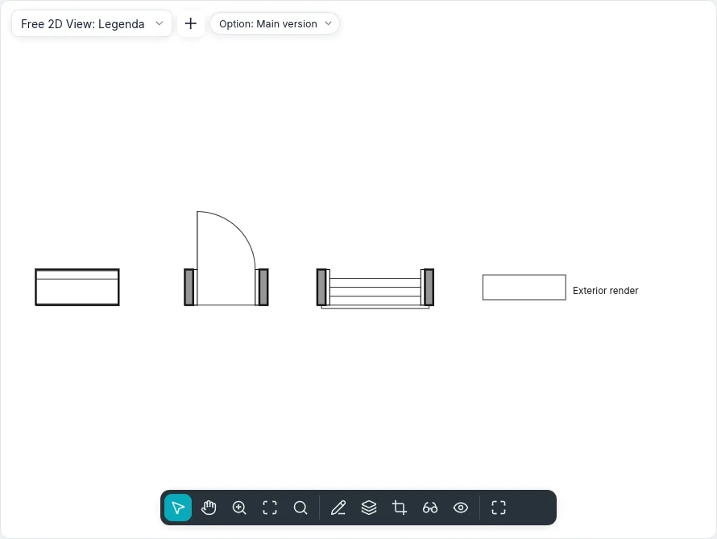
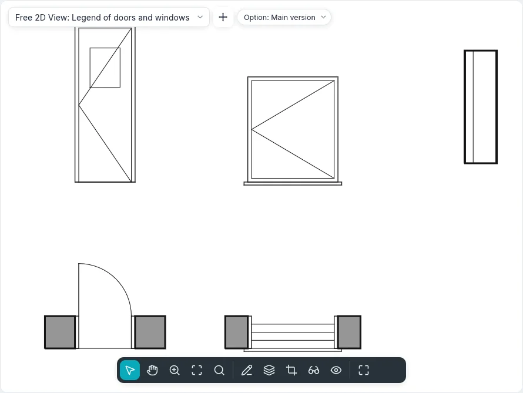
Component also lists ceilings, stairs, railings and columns, and two kinds of linked samples: Materials: … draws a sample of the material's Cut or Surface pattern, a Swatch wide × high, and Line Styles: … draws a line as long as Length; With name writes the name beside. A sample follows what it samples: change the material's pattern or name, or the line style's weight, colour or pattern, and the legend follows. In the legend's Visibility/Graphics, doors (Frame, Panel, Swing lines, Glass, Threshold), windows (Frame, Glass, Sill, Swing lines), stairs (Treads, Risers, Walk line) and railings (Handrail, Balusters) have their subcategories under them, switched one by one: a legend of frames only is a door legend with the other rows off. The colour fill legend (Rooms and Areas ▸ Legend) also goes in a section or an elevation with a colour scheme.
A type dragged from Components in the Project Index into a legend becomes its legend component where it is dropped; a type of Components ▸ Symbols places that annotation symbol. Create Same, in the context menu of a selected element, starts the tool that places it with its type: for a legend component, with its view and host length too.
Detail lines and regions
Annotations ▸ Detail ▸ Detail line (DL) draws lines in the open view only, in the line style of
the Line style panel. The Draw panel offers Line, Rectangle, Inscribed Polygon,
Circumscribed Polygon, Circle, Start-End-Radius Arc, Center-ends Arc, Tangent
End Arc, Spline, Ellipse, Partial Ellipse and Fillet Arc. The options bar shows
what the shape takes:
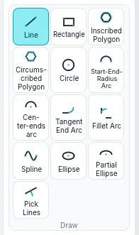
| Option | What it does |
|---|---|
| Continue | Each line (or arc, or spline) starts where the last ended; off, each one stands alone |
| Offset | What is drawn moves that far sideways; chained lines join at their corners |
| Radius | A circle, polygon or centre-ends arc of that radius (a circle takes one click); chained lines and rectangles get round corners. Offset is then ignored |
| Sides | The number of sides of a polygon |
After the first click, type a length (a line, a chord) or a radius (circles, polygons, arcs, ellipse axes) and press Enter; the value shows at the cursor. A centre-ends arc never exceeds 180°: past it, it turns the other way, and a typed angle sets its end. A tangent arc starts at the end of a line or arc you click. Shift keeps lines and polygon radii horizontal or vertical and turns chords, arc radii and ellipse axes in steps of 45°, and keeps the sweep of an arc at 90°, 180° or 270°. Esc ends a chain or a spline. The same shapes and options are in every sketch (floors, roofs, filled regions, revision clouds, wall boundaries).
Pick Lines makes a detail line on a wall's face, axis or layer, a grid or another line under the cursor (Tab for the next one), moved by Offset; with Lock the line stays on it and follows when it moves. Fillet Arc picks two lines and rounds their corner, with the arc under the cursor or of the Radius set. A selected detail line has grips at its ends and a temporary dimension of its length: type a value to change it. The end of a line selected on its own drags alone and leaves the next line where it is; with a chain selected (Tab), the ends where its lines meet drag together, in one undo step. The cursor snaps to the ends, middles, centres and crossings of the view's detail lines.
A spline cannot close on itself: a click on its first point is refused, and a second spline closes the boundary. A selected spline has a grip at each control point: drag one in the middle to reshape the curve; drag an end to move the whole spline, or press Tab on the end first to move only that end. Edit Spline ▸ Add Control puts a control point in the middle of the chord you click (the status bar says Reference over it) and Delete Control removes the one you click; Esc ends them. A selected ellipse shows its two radii as temporary dimensions (type a value to change one) and a grip at each quadrant: dragging one resizes that axis and turns the ellipse towards the cursor. With Editing Retains Proportions on the options bar both radii change together. A partial ellipse also has a grip at each end: Drag End changes how far it goes round, Tab switches to Drag Axis End, which moves that end of the axis while the other stays. Pick Lines on an arc, circle, ellipse or spline copies it; with Offset an ellipse or a spline gives splines.
The third point of a Start-End-Radius Arc snaps when the arc becomes tangent to the line or arc that ends at its start or its end: the tangency mark shows and the status bar says Tangent. A line drawn from the end of an arc snaps tangent to it in the same way. A selected arc has a grip at each end, which changes its sweep, and one in its middle: with Remain Concentric on the options bar the radius changes about the same centre, otherwise the ends stay where they are. The same happens in plans, sections, elevations and 3D.
Filled region ▸ Filled region opens sketch mode: the boundary is sketched with every shape of the Draw panel and with Pick Lines, and loops inside another are holes. A spline or an ellipse stays one curve of the sketch, with its grips; the region's outline is made of its short pieces. Esc ends a chain and keeps the sketch; Modify and the Modify tools work on its lines. Finish Edit Mode makes the region in the current region type, or says why it cannot (an open or crossing boundary). A selected region's Edit Boundary opens its sketch again. The type sets its fill pattern, colour and background (Opaque hides what is behind). Filled region ▸ Masking Region makes a region in the paper colour that hides what is beneath it. A region shows its Area and has Comments. A selected region has a grip at each vertex: drag one to change its shape.
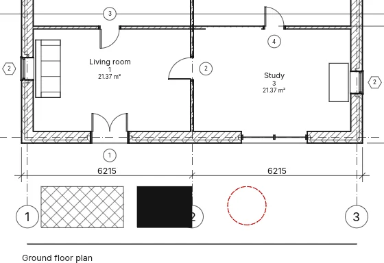
The tangency padlock
Select a line (a sketch line, a detail line or a 3D line) that meets another one end to end with the same direction: an open padlock shows beside the connection, outside the bend (none between two straight lines). Hover it to highlight both lines; click it to lock the tangency, click again to unlock. Locked, the lines stay tangent while either is edited: a line that turns makes an arc refit through its far end; an arc between two lines keeps its radius and slides on them; an ellipse turns about its far end; a spline's second control follows the direction. An edit that cannot keep it asks Constraint not kept: Remove constraint unlocks and does it, Cancel cancels. Right-click the padlock for Toggle Lock and Show Related. In the BIMopen style the command search also has Lock Tangencies and Unlock Tangencies for the selected lines.
Detail components, repeating details and insulation
- Component ▸ Detail component: a 2D symbol (brick, block, timber, steel section, insulation board, break line) placed in a drafting or detail view; the space bar lines it up with each wall or detail line near the cursor in turn (a quarter turn when there is none).
- Component ▸ Repeating detail: click a start and an end; the type sets the repeated component, the Layout (fill the available space, fixed distance, fixed number, maximum spacing), the Spacing, Inside and the rotation within the pattern. The instance has the Number when the layout is a fixed number.
- Insulation: click two points; Width and Offset (the insulation runs that far to the left of the clicks) in the options bar; with Pick Lines ticked, a click on a detail line or a wall draws it along that line. The insulation width and the bulge ratio in its properties. Selected insulation, and a selected repeating detail, have a grip at each end.
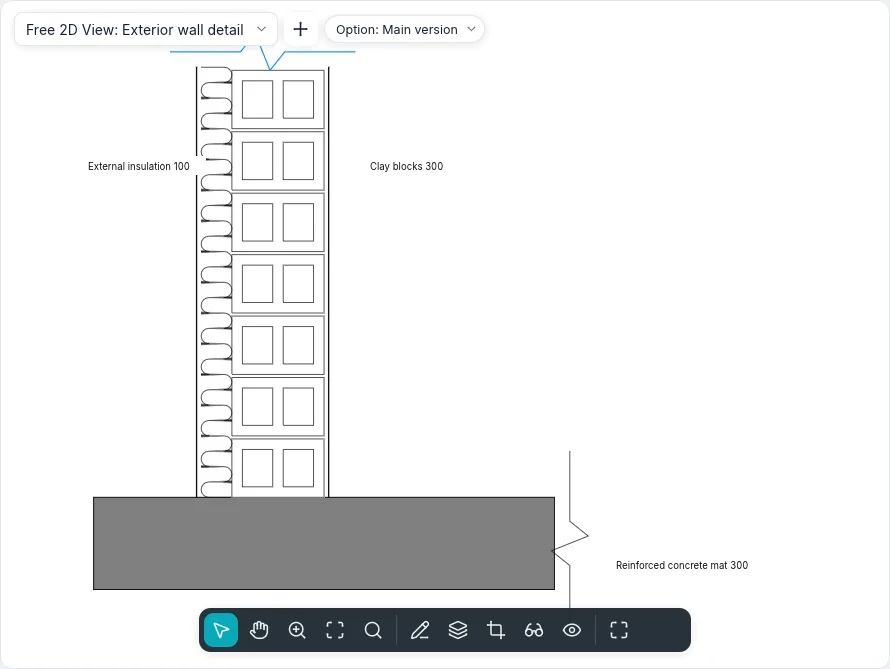
In Fill patterns, a pattern's Line weight draws its lines with one of the project's line weights; left at (thin) they stay hairlines.
Draw order
Select detail items only: Arrange offers Bring to Front, Bring Forward, Send to Back and Send Backward. Detail items always draw over the model, and a new one goes on top. Undo restores the previous order.
Free 2D views
Views ▸ Create ▸ Free 2D View asks for a name and a scale (or a custom one). The view opens and is listed under Free 2D Views; everything drawn in it is 2D, with no model behind it. It can go on one sheet. Duplicate View ▸ Duplicate with Detailing copies a view with its detail items, text, dimensions and legend components.
Save to New File… in the menu of a free 2D view in the Index writes a project with the view, its 2D elements and the types they use. Insert ▸ Insert Views from File… lists the file's free 2D views and schedules to tick; Insert 2D Elements from File… copies the 2D elements of one of its views into the active view (free 2D, plan or section): they follow the cursor and a click drops them, selected. Types with the same name stay this project's and are listed.
Type in the dialog and in the type selector picks one of the two shipped types, Detail and Scheme; others are made with Duplicate… in Type Parameters, which sets Section tag, Callout tag, Reference label (written beside the head of a callout pointing at the view, e.g. «Sim.») and Template for new views. Graphic Style is Hidden lines (patterned regions hide what lies beneath) or Wireframe (everything shows). A Reference Plane drawn here belongs to this view only and is not a work plane.
In a callout with Reference other view, the first item
Display Model in the properties of a plan, a section or a detail view draws the model Normal, Halftone (greyed under the details) or not at all (Do not display), leaving the details and annotations.
Views ▸ Create ▸ Detail with Reference other view ticked on the options bar draws a callout that points at an existing detail or free 2D view instead of making a new one: its head names that view and a double-click opens it; Referenced view in its properties changes it. In a free 2D view the callout is always of this kind.
Hide at scales coarser than in the properties of a section or a callout hides its symbol in the views whose scale is coarser, for example a 1 : 50 detail left out of the 1 : 100 plan.
At the command line
Every tool has its command: dim, lineardim, angulardim, radialdim, diamdim, arcdim,
spotelevation, text, findreplace, tag, room, roomsep, areaplan, areaboundary,
area, colorscheme, legend, legendview, legendcomponent, detailline, region, mask,
draworder, lock, eq. help followed by a command shows its usage; Keyboard
shortcuts lists the typed shortcuts.